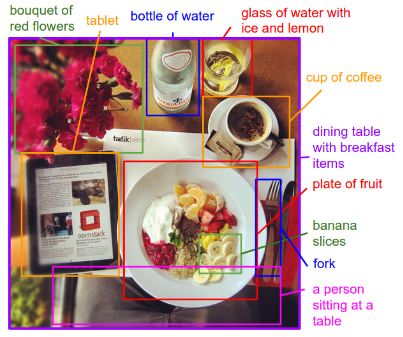
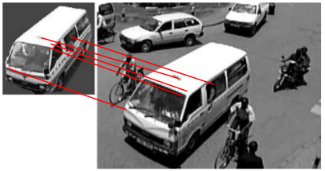
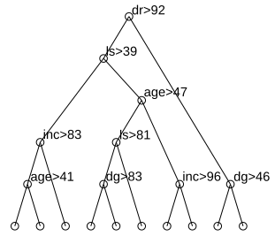
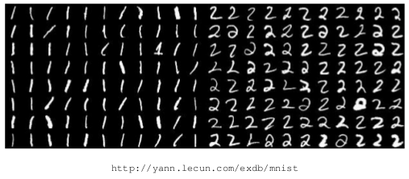
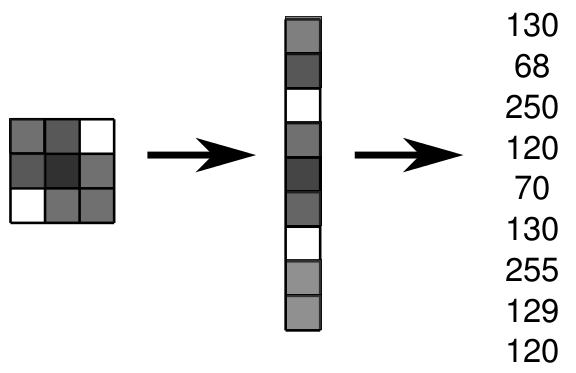
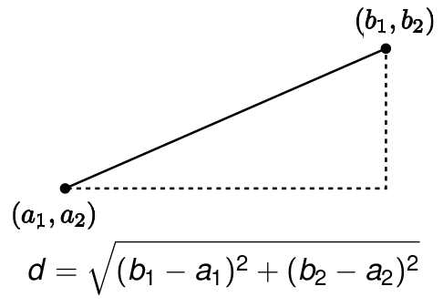
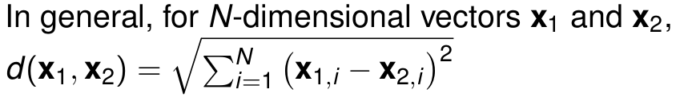

Classification Continued
John Quinn
Pulse Lab Kampala
AI Research group, Makerere University
Data Science Africa 2016
We make sense of the world by dividing things up into categories.
Karpathy and Fei-Fei (2014), http://arxiv.org/pdf/1412.2306.pdf
science
↑
scientia (Latin: knowledge)
↑
*skei- (Proto-Indo-European: to cut, to split)
Applications of classification:
- Face detection
- Face recognition
- Medical imaging
- Spam detection
- Optical character recognition
- Sentiment analysis
- Biometric identification
- Speech recognition
Data: http://anson.ucdavis.edu/~shumway/
Diagnosis of cassava diseases


Diagnosis of banana diseases

Classification of households into food-secure and food-insecure based on attributes.
Household indicator variables are: distance to road (dr), land size (ls), age of household head (age), income (inc), distance from house to garden (dg), all expressed in percentiles of the training data.

How would you write software to classify handwritten digits?
How about just distinguishing between 1s and 2s?
Image data is just grids of numbers, and can be represented as 1D arrays:
We need a similarity, or "distance" measure...
We need a similarity, or "distance" measure...

We need a similarity, or "distance" measure...
